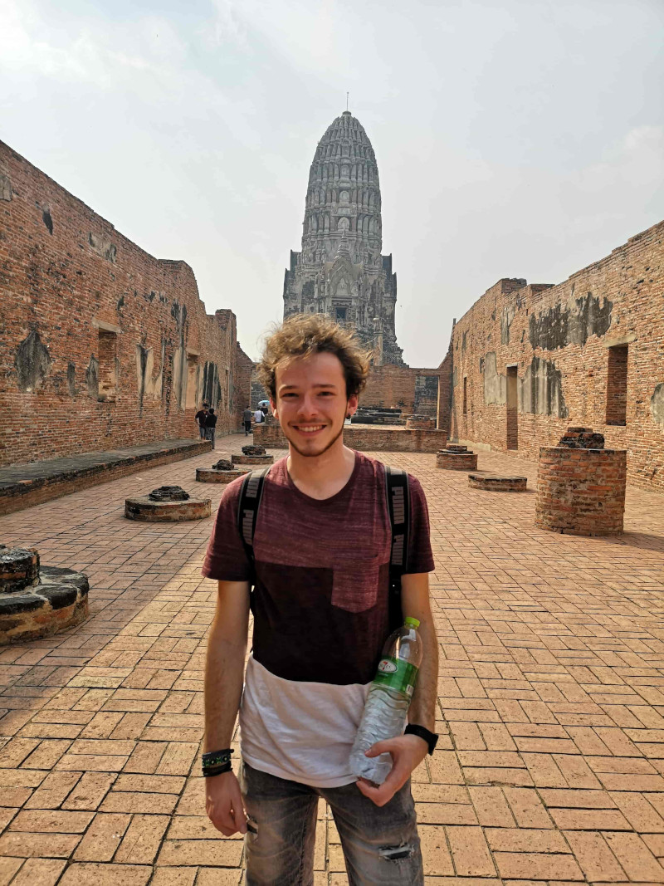

Über mich - Jannik Weisser
Über mich persönlich
Mein Name ist Jannik und ich studiere MIB.
In meiner Freizeit gehe ich gerne Bouldern, Klettern oder mache Musik.
Mein Studium
Ich studiere MIB, weil ich ein Studium gesucht habe, in welchem ich in mehrere Bereiche die mich interessieren, wie Informatik, Postproduktion und Animation ausprobieren, und das ganze später in einer Richtung vertiefen kann.